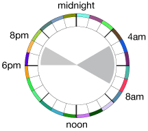

For the last month, I have been experimenting with living on a polyphasic sleep schedule. I want to publish some of my experiences with the system and how I have been hacking sleep to consistently live on 6 or less hours of sleep a day.
Firstly, it has to be said that I am much more of a morning person than a night owl, so getting-up is not difficult for me. If you are not a morning person, than your results might vary.
I have learnt a lot about sleep, motivation and keeping busy through this experiment. Over the last month, I have been testing different types of polyphasic sleep cycles, some more successful than others. I was also sick a few days here and there which broke the cycle allowing me an opportunity to jump in and out of polyphasic sleep and test the effects and ease at which it could be done. I don’t attribute the sickness to a weakened immune system, it was more a case of headaches from changes in the seasons and allergies than lack of sleep. The best way to remedy headaches is to lie down which inevitably ends-up in sleep sooner than expected.
My original goal was to move to a 4 and 2 sleep schedule where I sleep for 4 hours at night from 4am to 8am, then again in the evening for 2 hours between 6pm and 8pm. This would total 6 hours. It wasn’t difficult to move from 8 hours to 6 hours a day and to consistently keep it up. I wasn’t drowsy, my work did not seem effected, nor did I feel the inability to operate heavy machinery.
I kept a diary in the form of an online questionnaire which feed into a spreadsheet. Each day at roughly the same time, 8pm-ish, after my nap, I would complete this short survey. The results were tallied and examined. I have a friend who is an expert in clinical trial studies and we frequently discussed my progress. After about a week in, there didn’t seem to be any ill-effects. My outlook on life, irritability and other key factors all were pretty normal. So we decided together to extend the survey to include a few additional questions. The two additional were, weight and motivation.
One side-effect of having more awake time is when do you eat your meals? We were tracking “deviation from normal diet” – not necessarily healthy diet, just “normal” for me. Was being awake more changing the way I ate? I didn’t seem to have any cravings for anything specific. Some people who move to polyphasic sleep report having cravings for foods they don’t normally consume. I attribute this to a change in vitamin levels in the body. With a normal sleep pattern your body produces chemicals, rejuvenates your skin and breaks down other chemicals in your system. By not sleeping as long, your body might not have the chance to complete its “garbage collection” and leave you yearning for missing nutrients. I have been drinking a lot more juice recently, but I attribute that less to the sleep and more of an attempt to reduce my soda intake. Plus, fruit juice is healthy and better for you anyway. I am by no means a nutritionist, so don’t take my experience and observations as truth to why some people might have odd cravings.
Being awake extra hours lead to more snacking and I wanted to see if it was impacting health. The simplest way to observe this would be to weigh myself regularly and see if there was a tend up or down. Was the lack of sleep and the additional awake time causing me to burn more calories? Or was it having the opposite effect, the additional awake time causing me to snack more and loose less water weight during sleep? Or no change at all? No matter the outcome it would be worth tracking. Since there was no base-line weight reading before the experiment, I can continue to weight myself when I move back to monophasic sleep and see if my weight is steady or decreases/increases and levels back off to what was “normal” before the experiment started.
The other factor added for tracking was a motivation question. This became apparent only after the experiment had started. One week in and it proved fairly easy to move to a 4 and 2 schedule. The extra time on my hands quickly evaporated my simple todo list. So finding something tasks to force myself to stay awake those last few hours became a chore. Those first few nights at 2-3 am were not difficult to stay-up, but difficult to stay concentrated. At the edges, when you first wake-up and before you fall asleep, you can’t do extremely tedious tasks. This meant things like reading a book was out. I could read the words on the page, but I wouldn’t remember them the next day – so what’s the point? Watching TV wasn’t difficult, it doesn’t require too much focus or attention.
I then started to look for other tasks which could be rearranged in my normal day and be pushed to the “edges”. When you begin to optimize your awake time, it might be taking GTD too far. After dinner, what is the point of doing the washing-up immediately? At 8pm the sun was shining, I could go for a walk, meet friends, send emails, read a book, etc. Why waste 10-30 minutes over the sink? I could save this mind-numbing task until 3 am. It would keep me awake and give me something to do that wasn’t mentally taxing during a time when other options, like calling a friend, were not feasible.
So I gave myself the personal rule not to go to bed until the dishes in the sink were clean. This worked well until you’ve had a bad day at the office or have a headache and just want to sleep. Being an adult means that no one is yelling at you if you break the rules, so I probably broke the rules too often and just did the washing-up the next day.
This is where the motivation question came-in. After a week of staying-up and proving it could be done, what was the point? It was an interesting academic experiment to see if I could and I answered that question, so what was my motivation to continue? I needed an answer and what ended-up happening is I began to tweak the system in an attempt to optimize it. Still, the motivating factor couldn’t be found. WHY was there a need to do this? Those few extra hours were not proving to be that vital (at least not this month). It is good to know how easy I can jump back into the system if i need to, but to keep it up when there is no need doesn’t seem to be that practical.
Optimizations
The research that I read, claims that it takes about 90 minutes to move into REM sleep. When you move to polyphasic sleep you train yourself to move through the sleep cycles faster. I’m sure people’s milage may vary, but that’s the idea. As part of my first optimization, I wanted to move my sleep patterns more into multiples of 90 minutes. That way, I wasn’t breaking out of sleep cycles right in the middle. So I began to shorten the 2 hour sleep in the afternoon to 1.5 hours and add the left-over 30 minutes to the 4 hour block. This nicely made both multiple of 90. In the end, I don’t think it really mattered because if your body does adjust, then it will adjust to full the size of the container, be it 2 hours or 1.5 hours. So I further reduced the 1.5 hours down to a single hour and tacked the other .5 onto the 4.5 hour block to make an even 5 hours sleep at night. The idea being, I could further reduce that 5 hour block if needed and move my overall sleep down from 6 hours to less in a single place. Again, this was easily achieved, so I wanted to experiment further.
The next step was to take the 1 hour afternoon nap block and trying to reduce it to only 20 minutes from 8pm to 8:20pm then a second 20 minute nap from midnight to 12:20am. I tried this for a few days. The nice thing about this system is that if you needed to cheat, you could slip in additional 20 minute naps. Then keep the solid 4 hour block as the anchor. While this might be an option for some people, it didn’t really work for me.
I feel that there is a constant overhead time to try to get to sleep and to wake-up. It might be short, 10 minutes to get your bearings, get dressed, brush your teeth, make a cup of tea/coffee and get on your way. The more micro-sleep sessions you indulge in, you are burdened with this overhead each time. It is a constant and it’s eating away at your awake-time. Those two 20 minute naps with a ten minute overhead in getting to sleep and 10 minute overhead waking-up actually account for closer to 80 minutes of non-usable time. Whereas a single 1 hour nap plus 2 ten minute overheads also equate to 80 minutes non-usable time, and you probably get a better sleep out of the longer block. If we calculate the overhead for a 1.5 hour nap it turns out actually offer more usable awake time than three 20 minute naps which only total 60 minutes sleep time.
Tools
There are a few tools out there which help you optimize your sleep cycles. Most are expensive alarm clocks which listen to your breathing at night and guesstimate your current sleep cycle and then attempt to wake you at the most optimal point. Instead of setting your alarm for 7am, you set it for 6:30am to 7:00am and any time in that window the clock thinks is best for you to wake-up it rings the alarm. (Hopefully to the least angry version of you!) There is an application for your phone which does the same thing using the handset speaker as a microphone. This is probably more compact and useful than a bulky alarm clock which you don’t always travel with. The system is called Happy Wake-up and it sounds very interesting, unfortunately I don’t have a device that supports the software, so I was unable to test it.
Keeping a diary is also important. Using a simple spread-sheet on paper can be the easiest way to keep track of your sleep sessions. If you’re more tech savvy then something like Google Forms can be a simple place to dump all your data so it can easily be analyzed later.
Drawbacks
There were some issues to be aware off when moving to a polyphasic sleep schedule. The first is diet. Some things like alcohol consumption effect people in different ways. If you consume large amounts, you might find yourself falling asleep quicker and sleeping longer than expected.
Another drawback is scheduling your day around your sleep sessions. Simply going to the evening movies at 7pm might be a problem if it cuts into your nap. If you miss your nap, then you go to bed earlier and next thing you know, you’re not on polyphasic sleep anymore. So some social situations conflict with your sleep and you need to make a choice one way or another.
Conclusions
Overall, I am very happy with this experiment and will probably continue with it on a less intensive bases. Keeping one foot in the polyphasic camp will make it easier for me to jump back to it if needed when deadlines or other projects demand my attention.